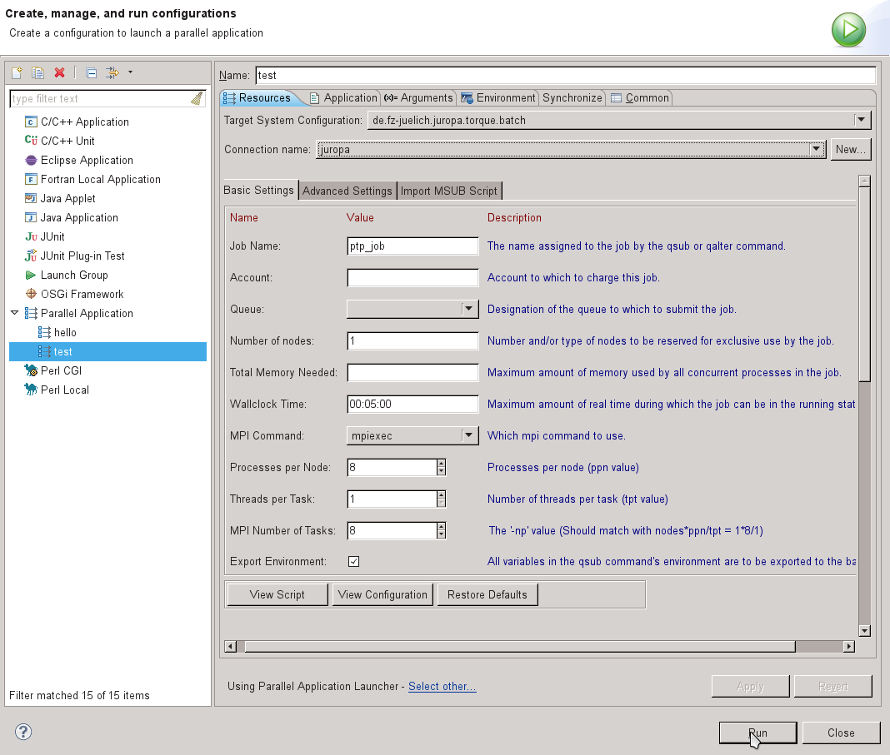
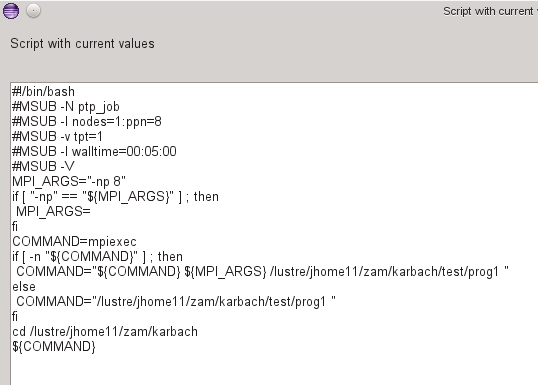

JUROPA is a computing resource at the Juelich Supercomputing Centre.
In order to run a batch job on JUROPA from PTP, first create a C/C++/Fortran project, and build it. For more information, see
As described in Running Parallel Programs, next create a run configuration via Run > Run Configurations ... and create a new Parallel Application.
Choose de.fz-juelich.juropa.torque.batch as target system configuration.
Since JUROPA is running a TORQUE/MOAB combination as batch system, the main configuration is similar to the Torque-Generic-Batch target system configuration. The Basic Settings for a job submission on JUROPA are shown in the following snap shot.
In addition to the usual parameters for TORQUE batch scripts, you can choose the number of processes per node (ppn), which can also be interpreted as number of CPUs per node. Via Threads per Task (tpt) one can configure to launch multiple threads for each MPI task. In general, the number of MPI tasks can be derived from the prior parameters nodes, ppn and tpt. The corresponding formula can be found in the description of the MPI tasks field. It is dynamically updated with the values set for the three parameters.
The shown configuration leads to the batch script presented in the following snap shot. You can check the status of the batch script generated with your current parameters by clicking on the View Script button.
Finally, you have to select the binary, which has to be executed, on the Application tab. Once your configuration is complete, you can click on the Run button to submit your job. The batch script is sent to JUROPA's batch system Moab via msub.
For more information see the run configuration setup for running your parallel application which also describes specifying the Application program on the Application tab, and specifying any other information required.